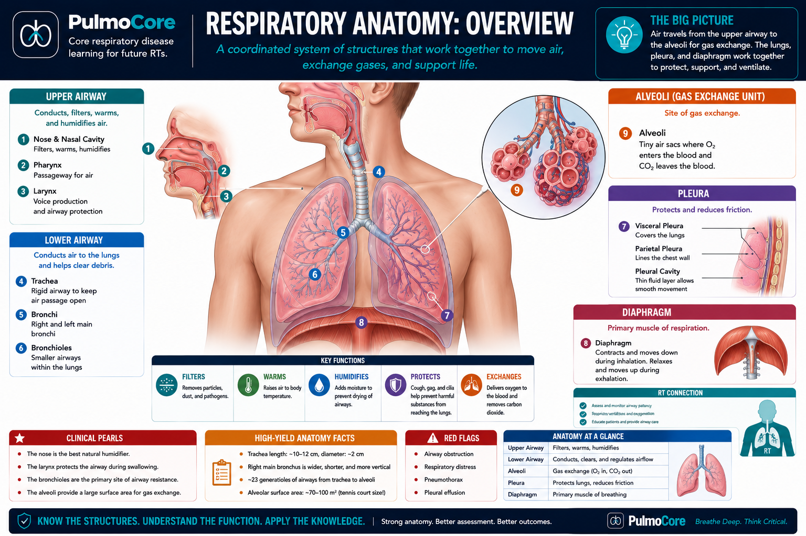
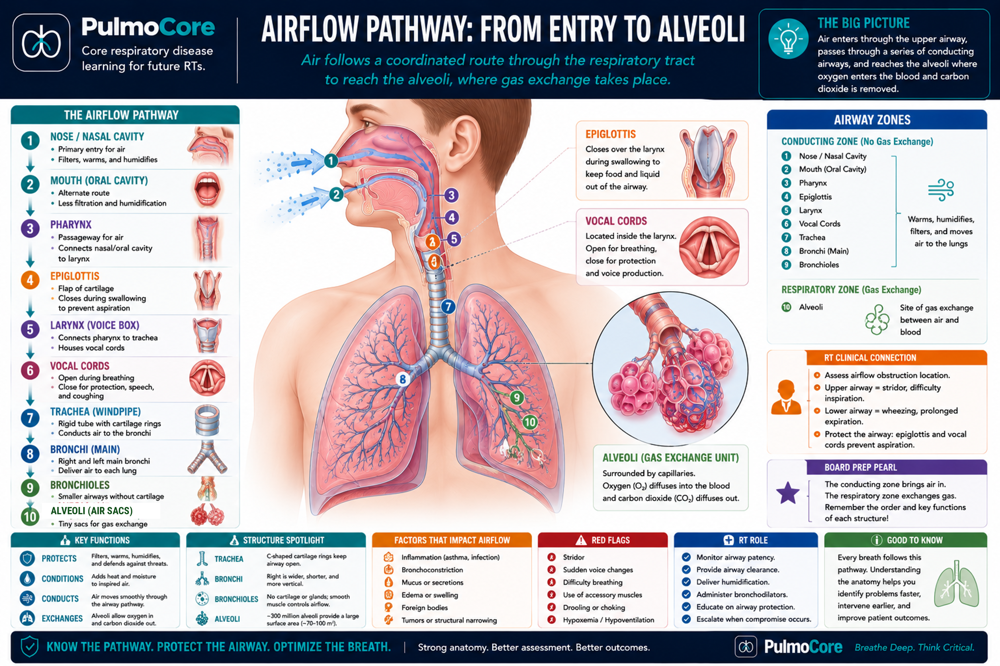
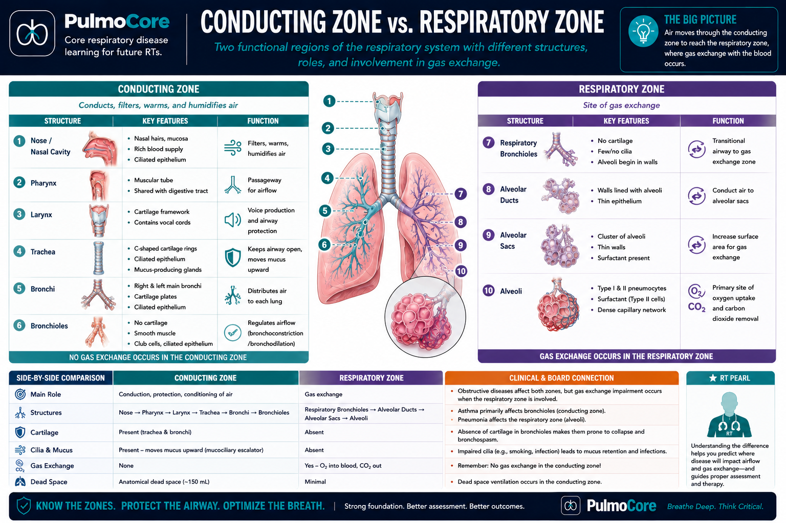
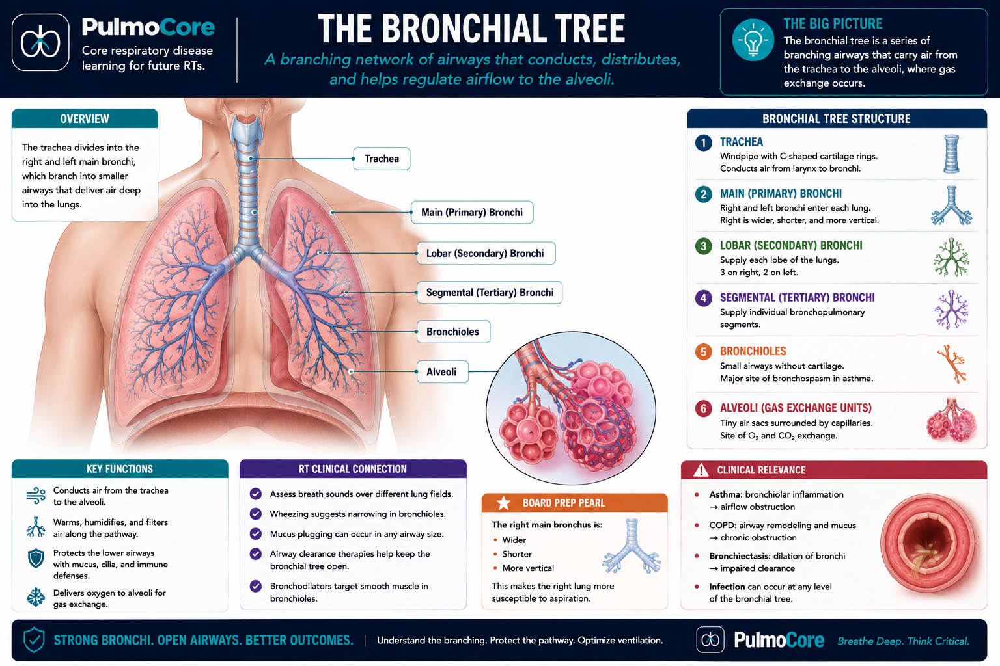
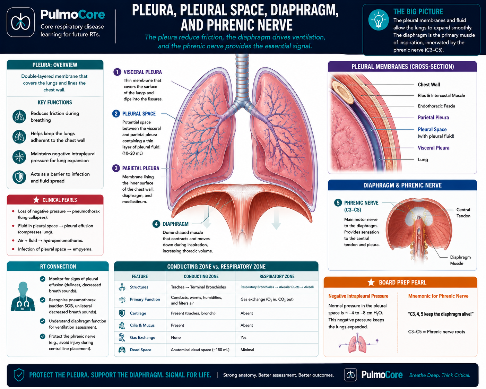

Practice: Put the Airflow Pathway in Order
Select the correct order for each structure.
Nose or mouth
Pharynx
Larynx
Trachea
Bronchi
Bronchioles
Alveoli
Complete the sequence to continue.
This beginner physiology lesson builds the respiratory anatomy map students need before learning mechanics, gas exchange, lung volumes, and disease patterns.
By the end of this lesson, learners should be able to describe the major structures of the respiratory system and explain the basic function of each structure in plain language.
Respiratory physiology becomes easier when you can picture the route air follows. Air enters through the upper airway, travels through branching tubes, and reaches tiny air sacs called alveoli. The diaphragm and chest wall help move air in and out.

Which structure is the main site of gas exchange?
Think of one breath as a path. Air enters through the nose or mouth, travels through the pharynx and larynx, passes down the trachea, branches into bronchi and bronchioles, and finally reaches the alveoli.

Select the correct order for each structure.
The conducting zone moves air but does not perform most gas exchange. The respiratory zone contains alveoli and is where oxygen and carbon dioxide exchange with the blood.

Choose whether each structure primarily conducts air or participates in gas exchange.
The lower airways branch like a tree. Larger airways become smaller and smaller until air reaches the alveoli. Small airways can be narrowed by inflammation, mucus, or bronchospasm, which increases resistance to airflow.

The lungs do not move by themselves. The diaphragm contracts to help pull air in, and the pleural membranes help the lungs follow chest wall movement with minimal friction.

Respiratory anatomy helps you understand what can go wrong. A blocked upper airway prevents air from entering. Narrowed bronchioles increase resistance. Damaged alveoli reduce gas exchange. Pleural problems can prevent the lung from expanding normally.
| Location | What Can Go Wrong | Simple Clinical Meaning |
|---|---|---|
| Upper airway | Obstruction, swelling, aspiration risk | Air may not enter safely. |
| Bronchi/bronchioles | Narrowing, mucus, bronchospasm | Airflow resistance increases. |
| Alveoli | Collapse, fluid, inflammation, destruction | Gas exchange becomes impaired. |
| Pleural space | Air or fluid where it should not be | Lung expansion can be limited. |
| Diaphragm | Weakness, paralysis, fatigue | Ventilation may decrease. |
This beginner case connects basic respiratory anatomy to patient problems.
A patient is awake but has noisy breathing near the throat after choking on food.
Which area is the RT most concerned about first?
Another patient has expiratory wheezing and difficulty moving air out.
Which part of the pathway is most likely narrowed?
A third patient is moving air, but oxygen transfer into the blood is impaired due to fluid-filled air sacs.
Which structure is directly affected?
Answer each question correctly to complete the activity.
Which sequence correctly follows airflow?
Which structure is the main muscle of quiet breathing?
What is the main job of the conducting zone?
Which statement best explains why alveoli are important?
Not yet. Start by understanding the pathway and major zones. More detailed branching becomes useful later when learning diseases and ventilators.
Bronchi are larger branching airways. Bronchioles are smaller airways closer to the alveoli and are important in airflow resistance.
The pleura reduce friction and help lungs move with the chest wall. Air or fluid in the pleural space can limit expansion.
The diaphragm is the main muscle used for quiet breathing. When it contracts, thoracic volume increases and air moves inward.
The respiratory system is a connected pathway. The upper airway conditions and protects air. The lower airway conducts air. The respiratory zone exchanges gases. Pleura help the lungs move smoothly, and the diaphragm powers quiet inhalation.
Search key terms before using the mastery flashcard deck.
Click the card to flip it. Mark known cards to move them into the completed pile.